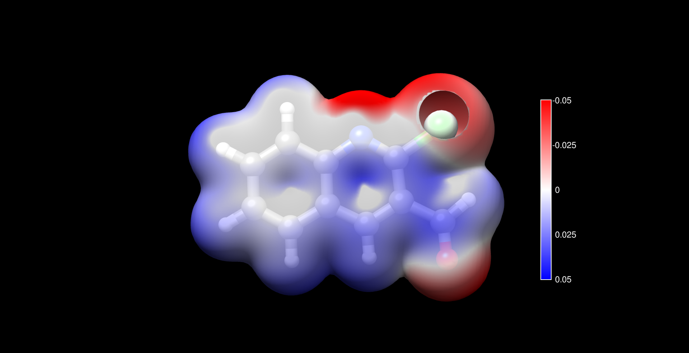

density dan potential MEP 3D
This page contains a Python script to calculate the molecular electrostatic potential (MEP).
Note
This script performs a SCF calculation to obtain the ground-state electron density, and evaluates the electrostatic potential on a 3D grid as the sum of the nuclear and electronic contributions. The result in .cube format to identify nulceaphilic and electrophilic sites.
mep.py
#!/usr/bin/env python
# coding: utf-8
# edit by materials@dindagustiayu.com
# import directories
from pyscf import gto, scf
from pyscf.tools import cubegen
# Create the pyscf molecule
mol = gto.M(atom="opt_mol.xyz")
# Setting the basis set
mol.basis = "#####"
# set the functional
mf = mol.KS()
mf.xc = '#####'
mf.kernel()
# Run Molecular Electrostatic Potential Energy Surface (MEP)
# Set the 1-particle density matrix
dm = mf.make_rdm1()
# Run MEP and save file in .cube
cubegen.mep(mol, "pot.cube", dm, resolution = 0.2)
cubegen.density(mol, "density.cube", dm, resolution = 0.2)
For example the definition of local-symmetry of 2-Chloro-3-quinolinecarboxaldehyde molecule:
